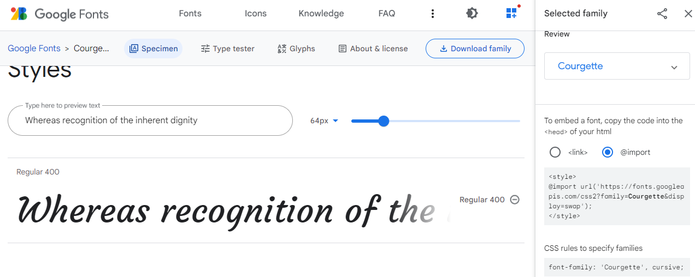
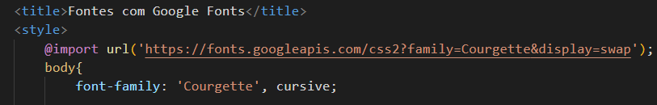

Fontes com Google Fonts
- O VS Code já possui algumas fontes automáticas, porém se usarmos somente ele, ficariamos limitados, diante disso podemos copiar algumas fontes da aplicação
Goole Fontes.
- Para isso entramos no site, escolhemos alguma fonte que queremos, selecionamos ela e copiamos o código após style e antes da identação, conforme na imagem. O Própio Google Fonts informa como devemos copiar o código da letra selecionada.
- Lembrando que para cada font extraída do Google Fonts, temos que add a url depois de style.

